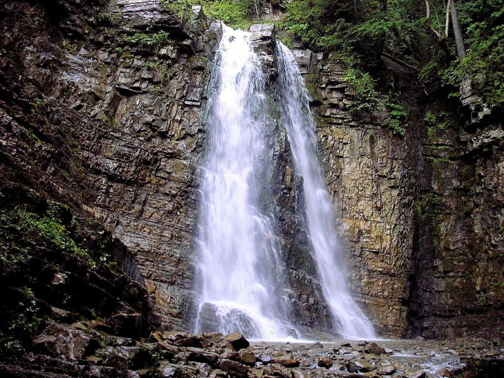

Острів Джарилгач на Херсонщині

Кращі роботи
Острів Джарилгач на Херсонщині
Джарилга́ч (крим. Carılğaç) — острів у Каркінітській затоці Чорного моря. Найбільший острів України та Чорного моря.Адміністративно належить до Скадовського району Херсонської області. Вся територія острова та частина прилеглої акваторії входить у Національний природний парк «Джарилгацький».
Стільське городище

Сті́льське городи́ще — середньовічне городище на території західної частини України. Розташоване вздовж східних околиць сіл Стільсько, Дуброва та Ілів Миколаївського району Львівської області.
Манявський водоспад
Маня́вський водоспа́д — водоспад в Українських Карпатах (масив Ґорґани); гідрологічна пам'ятка природи загальнодержавного значення. Розташований у межах Івано-Франківського району Івано-Франківської області, на південний захід від села Манява.